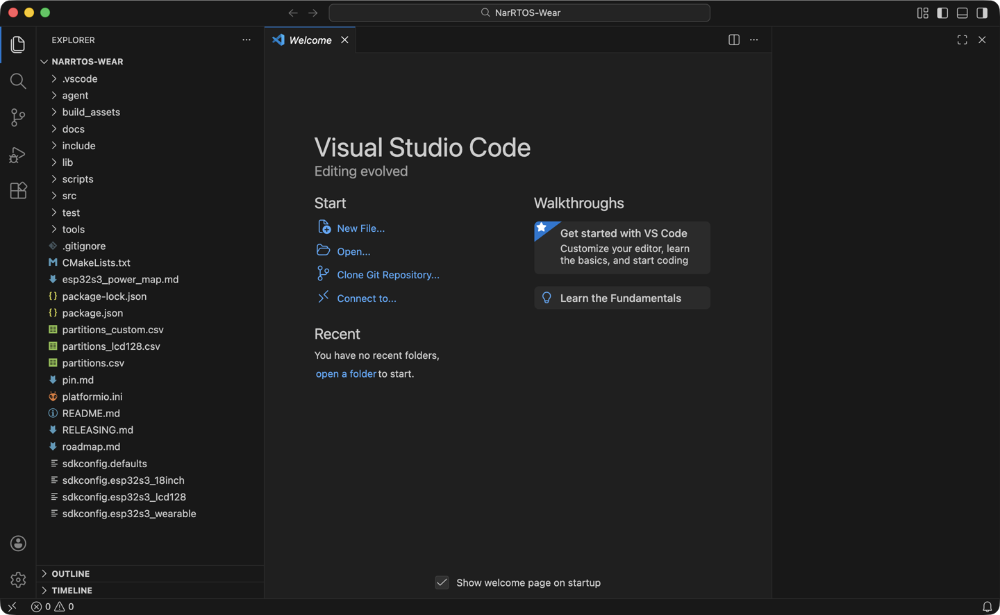
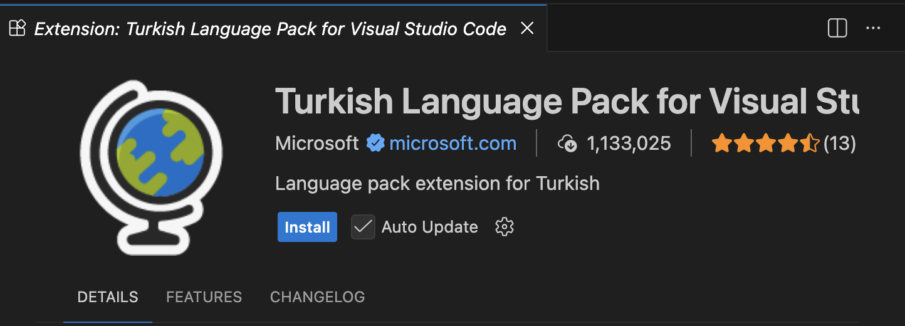
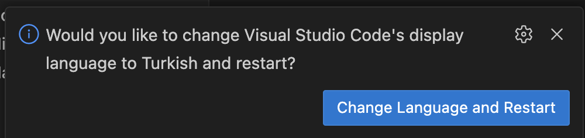
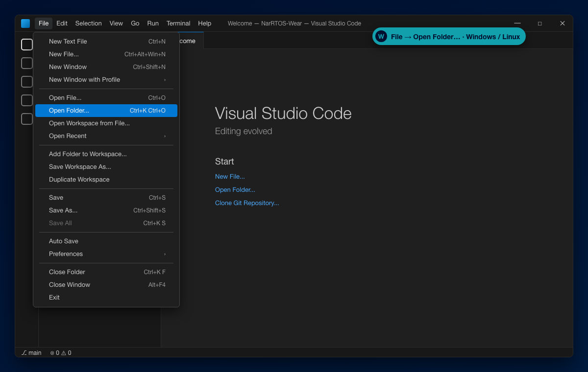

VS Code Kurulumu
Visual Studio Code (kısaca VS Code), Microsoft'un ücretsiz ve açık kaynak kod editörüdür. Windows, macOS ve Linux'ta çalışır; dosyalarınızı, terminali ve eklentileri tek pencerede toplar. Bu sayfa sıfırdan kurulumu ve ilk açılışta bilmeniz gereken birkaç şeyi anlatır.
Kurulum 10 dakika sürer ve hiçbir ön bilgi gerektirmez. Sonunda VS Code açık, bir klasör içinde çalışır durumda ve terminali kullanmaya hazır olursunuz.
VS Code nedir, ne değildir
VS Code bir metin editörüdür: kod dosyalarını açar, renklendirir, düzenlemenize yardım eder. Programları kendisi derlemez ya da çalıştırmaz; o işi eklentiler ve terminalde çalıştırdığınız araçlar yapar. Bu yüzden hafiftir ve her dil için kullanılabilir.
Visual Studio ile karıştırılmasın: o, Microsoft'un yalnız Windows'ta çalışan, çok daha büyük ve ayrı bir programıdır. Bu sayfa VS Code'u anlatır.
Kurulum
code.visualstudio.com adresine gidin. Büyük Download düğmesi işletim sisteminizi kendisi tanır; ardından kendi sisteminizin bölümünü izleyin.

Windows
- İnen
.exedosyasını çalıştırın; lisansı kabul edin, kurulum yerini olduğu gibi bırakın. - Select Additional Tasks ekranında şunları işaretleyin: Add "Open with Code" action to Windows Explorer file context menu, aynı satırın directory olanı, Register Code as an editor for supported file types ve Add to PATH (zaten işaretlidir). Böylece herhangi bir klasöre sağ tıklayıp VS Code ile açabilirsiniz.
- Install, ardından Finish. VS Code açılır.
macOS
- İnen
.zipdosyasına çift tıklayın; Visual Studio Code uygulaması çıkar. - Bu simgeyi Uygulamalar (Applications) klasörüne sürükleyin. İndirilenler klasöründe bırakırsanız güncellemeler sorun çıkarır.
- Launchpad'den açın. "İnternetten indirilen bir uygulama" uyarısına Aç deyin.
- Sık kullanacaksanız Dock'taki simgeye sağ tıklayıp Options → Keep in Dock seçin.
- Terminalden
codekomutuyla açabilmek için: VS Code içinde ⇧⌘P tuşlarına basın,Shell Command: Install 'code' command in PATHyazıp Enter. Artık herhangi bir terminaldecode .yazmak bulunduğunuz klasörü VS Code'da açar.
Linux
- Ubuntu / Debian:
.debdosyasını indirip terminaldesudo apt install ./code_*.debçalıştırın (ya da dosyaya çift tıklayıp Yükle deyin). Bu yöntem Microsoft'un paket deposunu da ekler; sonraki güncellemeleraptile gelir. - Fedora / RHEL:
.rpmdosyasını indiripsudo dnf install ./code-*.rpm. - Snap kullanan dağıtımlar:
sudo snap install code --classic
İlk açılış
Karşınıza Welcome sekmesi gelir. Buradan koyu ya da açık tema seçebilirsiniz; sonradan değiştirmek için File → Preferences → Theme → Color Theme.

Arayüz İngilizcedir. Dokümanların ve eğitimlerin büyük çoğunluğu İngilizce menü adlarını kullandığı için başlangıçta İngilizce bırakmak takip etmeyi kolaylaştırır. Yine de Türkçe istiyorsanız birkaç adımda değiştirebilirsiniz:
- Pencerenin en solundaki dikey şeritte, üst üste dört kare görünen simgeye tıklayın; bu Extensions (Eklentiler) görünümüdür. Klavyeden Ctrl + Shift + X (Mac'te ⇧⌘X) de açar.
- Üstte beliren arama kutusuna
Turkish Language Packyazın. - Listede Turkish Language Pack for Visual Studio Code (yayıncı: Microsoft) çıkar. Yanındaki mavi Install düğmesine basın; birkaç saniye sürer.
- Sağ altta "Would you like to change Visual Studio Code's display language to Turkish and restart?" sorusu çıkar. Change Language and Restart düğmesine basın. VS Code kapanıp Türkçe açılır.


Soru çıkmadıysa: Ctrl + Shift + P (Mac'te ⇧⌘P) tuşlarına basın, Configure Display Language
yazıp Enter'a basın, listeden Türkçe seçin; VS Code yeniden başlatmayı ister.
Türkçeye geçtiyseniz bu dokümandaki İngilizce menü adlarının Türkçe karşılığını kullanırsınız; örneğin Terminal → New Terminal, Terminal → Yeni Terminal olur. Geri dönmek için aynı komutu çalıştırıp English seçin.
Güncellemeler kendiliğinden iner. Sağ altta "Restart to update" görünce yeniden başlatın; birkaç saniye sürer.
Pencereyi tanıyın

| Bölge | Nerede | Ne işe yarar |
|---|---|---|
| Activity Bar | En soldaki dikey şerit | Görünümler arasında geçiş: Explorer (dosyalar), Search (ara), Source Control (git), Run and Debug, Extensions (eklentiler) |
| Sidebar | Şeridin sağındaki panel | Seçili görünümün içeriği; Explorer'da açık klasörün dosya ağacı |
| Editor | Ortadaki geniş alan | Dosyalar sekmeler halinde açılır; yan yana bölünebilir |
| Panel | Alt kısım | Terminal, Problems (hatalar), Output (çıktılar) |
| Status Bar | En alt ince şerit | Satır/sütun, dosya türü, git dalı, hata sayısı |
| Command Palette | Ctrl + Shift + P (Mac'te ⇧⌘P) | Her komuta adını yazarak ulaşmanın yolu; menülerde aramaktan hızlıdır |
Bir klasör açın
VS Code dosyalarla değil klasörlerle çalışır. File → Open Folder ile proje klasörünüzü seçin. VS Code, "Do you trust the authors of the files in this folder?" diye sorabilir; kendi projeleriniz ve bildiğiniz kaynaklardan indirdikleriniz için Yes, I trust the authors deyin. Sol taraftaki Explorer'da klasörün içeriği listelenir; bir dosyaya tıklamak onu ortada açar.


Daha önce açtığınız klasörlere File → Open Recent ile dönersiniz. Tek bir dosya açmak için File → Open File.
Terminali kullanın
Terminal → New Terminal alt panelde bir terminal açar. Kısayolu Ctrl + ` (Mac'te de Ctrl + `) tuşudur; Türkçe klavyede ` işareti yoksa menü yolunu kullanın. Terminal, o an açık olan klasörün içinde başlar; komutları ayrıca bir yere gitmeden yazarsınız.


Windows'ta PowerShell, macOS'ta zsh, Linux'ta bash çalışır. Sağ üstteki + ikinci bir terminal açar, çöp kutusu kapatır. Varsayılan kabuğu değiştirmek için + düğmesinin yanındaki ▾ okuna basıp Select Default Profile seçin.
Eklentiler
Dil desteği, tema, araç entegrasyonu gibi her şey eklentiyle gelir. Activity Bar'daki Extensions simgesine (Ctrl + Shift + X) tıklayın, arama kutusuna adı yazın, Install deyin. Kullandığınız programlama dilinin resmi eklentisi (Python, C/C++, Go...) başlangıç için yeterlidir; diğerlerini ihtiyaç doğduğunda kurun.
Bir proje klasörünün içinde .vscode/extensions.json dosyası varsa VS Code
açılışta sağ altta "Do you want to install the recommended … extension for this repository?"
diye sorar. Projenin kendi dokümanı ne diyorsa onu yapın; emin değilseniz çarpıyla kapatın,
sonradan kurmak her zaman mümkündür.

Git ile birlikte
Source Control görünümü ve çoğu proje, bilgisayarınızda git kurulu olmasını bekler. VS Code "Git not found" uyarısı veriyorsa:
- Windows: git-scm.com/download/win adresinden kurulum dosyasını indirin, bütün ekranlarda Next deyin.
- macOS: terminale
xcode-select --installyazın; Apple'ın komut satırı araçları git'i içerir. - Linux:
sudo apt install git
Kurulumdan sonra VS Code'u tamamen kapatıp yeniden açın; yoksa yeni programı görmez.
Sık karşılaşılan sorunlar
| Gördüğünüz | Çözümü |
|---|---|
| Mac: "cannot be opened because Apple cannot check it for malicious software" | Uygulamaya sağ tıklayıp Open seçin (bir kez yeter). Olmazsa System Settings → Privacy & Security → Open Anyway |
Windows: terminalde code komutu tanınmıyor | Kurulumda Add to PATH işaretlenmemiş ya da terminal eskiden açık. Terminali yeniden açın; hâlâ yoksa kurulum dosyasını tekrar çalıştırıp seçeneği işaretleyin |
Mac: code komutu yok | VS Code içinde ⇧⌘P → Shell Command: Install 'code' command in PATH |
| Terminal açılıyor ama beklediğim kabuk değil | Terminal panelindeki ▾ ok → Select Default Profile |
| "Git not found" uyarısı | Yukarıdaki gibi git'i kurun, VS Code'u yeniden başlatın |
| Yazılar çok küçük ya da çok büyük | View → Appearance → Zoom In / Zoom Out (Ctrl + = ve Ctrl + -) |
| Sağ altta sürekli bildirim çıkıyor | Status Bar'ın en sağındaki çan simgesi → Do Not Disturb Mode |
| Yanlışlıkla bir paneli kapattım, bulamıyorum | View menüsünden ilgili görünümü seçin ya da Command Palette'e adını yazın |